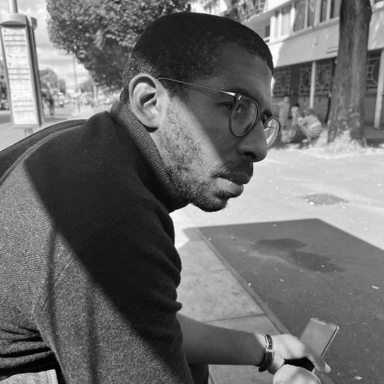

My Resume

Summary
- Education
- May 2017 : Degree in Law and Political Science from the Aix-Marseille University in France
- Feb 2023 : Amazon Web Service Certification - Cloud Practitioner
- April 2023 : Amazon Web Services Certification - Cloud Architect Associate
- March 2024 : Web Development Bootcamp Complition
- Work Experience
- 2022 : Webmaster - Exceline
- 2023 : Cloud Ingineer Intern - SYnechron
- Skills
- GitHub
- AWS
- NoSQL
- HTML
- CSS
- JavaScript
- Python
My Hobbies
Contact